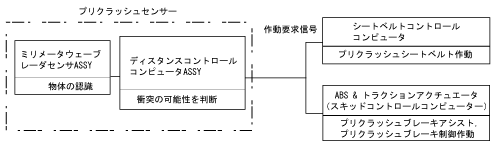

| Pre-crash Sensor |
| ● |
Obstacles are recognized through the millimeter wave radar, the possibility of a collision is determined, and operation request signals are sent to each computer.
|
 |
 Pre-crash Seat Belt Operation Pre-crash Seat Belt Operation
|
Pre-crash Brake Assist Control
|

Pre-crash Brake Control
|

Operating Range of Each Control
|
 Non-operating Conditions Non-operating Conditions
|
|||||||||||||||||||||||||||||
Other Operating Cases
|